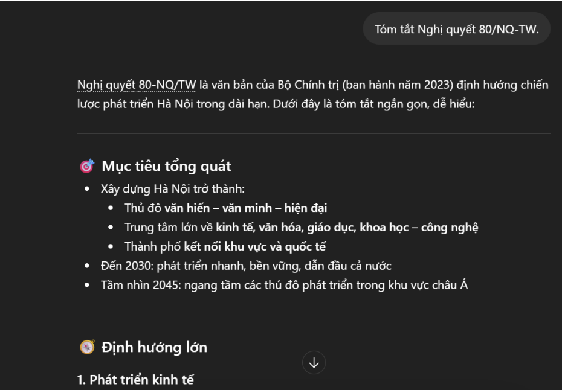
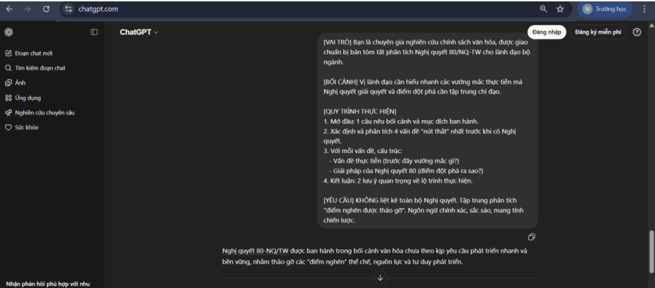

Họ và tên: Nguyễn Quốc Cường
Lớp: K70A — AI4
Mã sinh viên: 25022799
Cơ sở lựa chọn: Ba tác vụ được chọn dựa trên tính phổ biến trong môi trường học thuật luật học, thể hiện ba cấp độ tư duy khác nhau: tái hiện thông tin (tóm tắt), hiểu sâu bản chất (giải thích khái niệm), và vận dụng tổng hợp (tạo câu hỏi ôn tập).
| Tác vụ | Bản chất | Yêu cầu cốt lõi | Thách thức khi viết prompt |
|---|---|---|---|
| 1. Tóm tắt tài liệu | Xử lý nội dung, chọn lọc thông tin | Xác định đúng trọng tâm, loại bỏ chi tiết thừa | AI dễ bị "liệt kê" toàn bộ thay vì chọn lọc; khó làm nổi bật điểm đột phá |
| 2. Giải thích khái niệm phức tạp | Phân tích, so sánh, làm rõ | Làm sáng tỏ ranh giới giữa các khái niệm dễ nhầm lẫn | Khái niệm mang tính trừu tượng; AI dễ sa vào định nghĩa sách vở mà thiếu tính ứng dụng |
| 3. Tạo bộ câu hỏi ôn tập | Thiết kế đánh giá, vận dụng kiến thức | Kiểm tra được các cấp độ nhận thức (nhớ - hiểu - vận dụng) | Dễ tạo ra câu hỏi học thuộc lòng, khó thiết kế được câu hỏi "gài bẫy" hoặc tình huống phức tạp |
Tóm tắt Nghị quyết 80/NQ-TW.
Tóm tắt Nghị quyết 80/NQ-TW của Bộ Chính trị về phát triển văn hóa Việt Nam. Yêu cầu tóm tắt dưới dạng gạch đầu dòng, tập trung vào 3-4 điểm mới và quan trọng nhất mà Nghị quyết này giải quyết (ví dụ: quan điểm chỉ đạo, mục tiêu đến 2030, các nhiệm vụ đột phá). Mục tiêu là nắm bắt nhanh các điểm mấu chốt.
[VAI TRÒ] Bạn là chuyên gia nghiên cứu chính sách văn hóa, được giao chuẩn bị bản tóm tắt phân tích Nghị quyết 80/NQ-TW cho lãnh đạo bộ ngành.
[BỐI CẢNH] Vị lãnh đạo cần hiểu nhanh các vướng mắc thực tiễn mà Nghị quyết giải quyết và điểm đột phá cần tập trung chỉ đạo.
[QUY TRÌNH THỰC HIỆN]
1. Mở đầu: 1 câu nêu bối cảnh và mục đích ban hành.
2. Xác định và phân tích 3-4 vấn đề "nút thắt" nhất trước khi có Nghị quyết.
3. Với mỗi vấn đề, cấu trúc: Vấn đề thực tiễn (trước đây vướng mắc gì?) – Giải pháp của Nghị quyết 80 (điểm đột phá ra sao?).
4. Kết luận: 1-2 lưu ý quan trọng về lộ trình thực hiện.
[YÊU CẦU] KHÔNG liệt kê toàn bộ Nghị quyết. Tập trung phân tích "điểm nghẽn được tháo gỡ". Ngôn ngữ chính xác, sắc sảo, mang tính chiến lược.
Giải thích khái niệm "công nghiệp văn hóa" trong Nghị quyết 80/NQ-TW.
Hãy giải thích khái niệm "công nghiệp văn hóa" theo Nghị quyết 80/NQ-TW.
Yêu cầu:
1. Định nghĩa khái niệm.
2. Liệt kê các ngành công nghiệp văn hóa trọng tâm.
3. Giải thích vì sao công nghiệp văn hóa được coi là "đột phá chiến lược".
[VAI TRÒ] Bạn là giảng viên đại học chuyên ngành Quản lý văn hóa, nổi tiếng với khả năng giải thích các khái niệm chính sách phức tạp một cách dễ hiểu.
[ĐỐI TƯỢNG] Tôi là sinh viên năm 2, đang bối rối vì khái niệm "công nghiệp văn hóa" dễ bị nhầm lẫn với "văn hóa đại chúng" hay "giải trí đơn thuần".
[YÊU CẦU]
1. Giải thích điểm mấu chốt để phân biệt "công nghiệp văn hóa" với "văn hóa đại chúng". Tập trung vào bản chất kinh tế - sáng tạo: kết hợp sáng tạo nghệ thuật với sản xuất, phân phối, thương mại hóa có bảo vệ bản quyền.
2. Lấy 2 ví dụ cụ thể từ các ngành được Nghị quyết 80 xác định (điện ảnh, thời trang, thiết kế) để minh họa.
3. Tạo một "bài kiểm tra nhanh" (litmus test) gồm 1 câu hỏi tình huống để người học tự kiểm tra.
Cho tôi vài câu hỏi ôn tập về Nghị quyết 80/NQ-TW.
Tạo 10 câu hỏi ôn tập về Nghị quyết 80/NQ-TW (về phát triển văn hóa Việt Nam).
Yêu cầu cấu trúc:
• 5 câu hỏi lý thuyết (Trình bày, phân tích...)
• 5 câu hỏi nhận định Đúng/Sai (có yêu cầu giải thích)
Phạm vi: Quan điểm chỉ đạo, mục tiêu đến 2030, các nhiệm vụ đột phá về thể chế, nguồn lực và công nghiệp văn hóa.
[VAI TRÒ] Bạn là giảng viên bộ môn Quản lý nhà nước về văn hóa, cần chuẩn bị câu hỏi kiểm tra sinh viên trước kỳ thi.
[CHỦ ĐỀ] Nghị quyết 80/NQ-TW về phát triển văn hóa Việt Nam.
[QUY TRÌNH THỰC HIỆN] Hãy tạo 3 loại câu hỏi:
1. Câu hỏi Lý thuyết Phân biệt (2 câu): Tập trung vào các khái niệm dễ nhầm lẫn.
2. Câu hỏi Nhận định 'Gài bẫy' (5 câu): Các nhận định "có vẻ đúng nhưng sai" hoặc "có vẻ sai nhưng đúng".
3. Bài tập Tình huống Phức tạp (1 câu): Tình huống địa phương muốn phát triển công nghiệp văn hóa từ di sản.
[YÊU CẦU CHUNG] Kiểm tra khả năng áp dụng Nghị quyết vào thực tiễn, không phải học thuộc lòng.
Ghi chú: Dưới đây là kết quả mô phỏng từ quá trình thử nghiệm thực tế với công cụ AI. Ảnh chụp màn hình được đính kèm dưới đây.


| Tiêu chí | Prompt Cơ bản | Prompt Cải tiến | Prompt Nâng cao |
|---|---|---|---|
| Định dạng đầu ra | Đoạn văn liệt kê, thiếu cấu trúc | Gạch đầu dòng, có cấu trúc rõ ràng | Phân tích theo cặp vấn đề – giải pháp |
| Mức độ chọn lọc | Liệt kê toàn bộ nội dung | Chọn lọc 3-4 điểm trọng tâm | Chỉ tập trung vào điểm nghẽn và giải pháp |
| Khả năng ứng dụng | Người dùng phải tự phân tích | Người dùng nắm được trọng tâm | Đã có sẵn khung phân tích để hành động |
| Độ sâu tư duy | Tái hiện thông tin | Tổ chức thông tin | Phân tích, suy luận, định hướng |
| Phiên bản | Kết quả đặc trưng | Điểm mạnh | Hạn chế |
|---|---|---|---|
| Cơ bản | Liệt kê 5-7 nội dung: "Nghị quyết gồm I. Quan điểm, II. Mục tiêu..." | Cung cấp đủ các phần chính | Không làm nổi bật điểm đột phá |
| Cải tiến | 4 gạch đầu dòng: quan điểm "văn hóa ngang tầm", mục tiêu 2% ngân sách... | Chọn lọc trọng tâm; dễ nắm bắt nhanh | Chưa giải thích ý nghĩa thực tiễn |
| Nâng cao | Phân tích 4 vấn đề nút thắt – mỗi vấn đề có cặp "vướng mắc/giải pháp" | Hiểu được tại sao Nghị quyết ra đời | Yêu cầu người dùng có kiến thức nền |
| Phiên bản | Kết quả đặc trưng | Điểm mạnh | Hạn chế |
|---|---|---|---|
| Cơ bản | Định nghĩa chung: "Công nghiệp văn hóa là ngành kinh tế dựa trên sáng tạo..." | Cung cấp định nghĩa chuẩn | Không phân biệt được với khái niệm tương tự |
| Cải tiến | Định nghĩa + danh sách 8 ngành + lý do đột phá | Có cấu trúc rõ ràng | Vẫn mang tính liệt kê |
| Nâng cao | Điểm mấu chốt phân biệt + 2 ví dụ + bài kiểm tra nhanh | Giải quyết trực tiếp "nỗi đau" của sinh viên | Ví dụ cần cập nhật sát thực tế |
Cơ chế: Khi prompt thiếu ràng buộc, không gian giải pháp là cực kỳ lớn. Mô hình sẽ hội tụ về câu trả lời có xác suất thống kê cao nhất dựa trên toàn bộ dữ liệu huấn luyện.
Hậu quả: Câu trả lời mang tính "mẫu số chung" – đúng nhưng chung chung, không có điểm nhấn, không phản ánh mục tiêu cụ thể của người dùng.
Cơ chế: Bằng cách thêm cấu trúc (gạch đầu dòng, số lượng điểm, phạm vi cụ thể), người dùng thu hẹp không gian dự đoán, buộc AI phải chọn lọc thay vì liệt kê.
Hiệu quả: Kết quả có tổ chức, dễ đọc, dễ nắm bắt trọng tâm.
Prompt nâng cao hiệu quả vì kết hợp 4 kỹ thuật thu hẹp không gian dự đoán:
| Kỹ thuật | Vai trò | Ví dụ trong bài |
|---|---|---|
| Vai trò (Role) | Áp "bộ lọc" tri thức và văn phong chuyên biệt | "Bạn là chuyên gia nghiên cứu chính sách văn hóa" |
| Bối cảnh (Context) | Ràng buộc phạm vi và mục tiêu | "Cho lãnh đạo bộ ngành cần hiểu vướng mắc thực tiễn" |
| Quy trình (Chain of Thought) | Ép AI suy luận tuần tự | Quy trình 4 bước: bối cảnh → xác định vấn đề → phân tích → kết luận |
| Mẫu (Few-Shot) | Cung cấp khuôn mẫu về định dạng và chất lượng | Ví dụ mẫu câu hỏi "gài bẫy" về chỉ tiêu 2% ngân sách |
Điểm khác biệt cốt lõi: Prompt nâng cao không chỉ hỏi "cái gì" mà còn chỉ dẫn "làm thế nào" để AI suy nghĩ. Kết quả không chỉ là thông tin, mà là khung phân tích mà người dùng có thể áp dụng.
Mẹo: Đừng chỉ hỏi "Hãy làm X". Hãy quy định rõ định dạng đầu ra (gạch đầu dòng, bảng, số lượng điểm), phạm vi, và mục tiêu.
❌ Kém: "Tóm tắt Nghị quyết 80."
✅ Tốt: "Tóm tắt dưới dạng gạch đầu dòng, tập trung 3-4 điểm mới nhất."
Mẹo: Gán cho AI một vai trò cụ thể (chuyên gia, giảng viên) và xác định rõ đối tượng tiếp nhận.
❌ Kém: "Giải thích công nghiệp văn hóa."
✅ Tốt: "Bạn là giảng viên đại học, giải thích cho sinh viên năm 2 đang bối rối."
Mẹo: Chia nhiệm vụ lớn thành các bước nhỏ, yêu cầu AI thực hiện tuần tự.
❌ Kém: "Tạo bộ câu hỏi ôn tập."
✅ Tốt: "1. Tạo 2 câu phân biệt khái niệm. 2. Tạo 5 câu 'gài bẫy'. 3. Tạo 1 tình huống phức tạp."
Mẹo: Cung cấp ví dụ mẫu về định dạng, độ dài, hoặc mức độ khó mà bạn mong muốn.
❌ Kém: "Tạo câu hỏi đúng/sai."
✅ Tốt: "Ví dụ mẫu: 'Nghị quyết 80 quy định chỉ 1% ngân sách.' → Sai, vì yêu cầu tối thiểu 2%."
| Từ | Sang |
|---|---|
| Người hỏi mơ hồ | Kiến trúc sư thiết kế yêu cầu |
| Yêu cầu sản phẩm | Điều khiển quy trình tư duy |
| Nhận thông tin | Định hướng phân tích và hành động |
Môn: Nhập môn Công nghệ số & Ứng dụng Trí tuệ nhân tạo | MSSV: 25022799